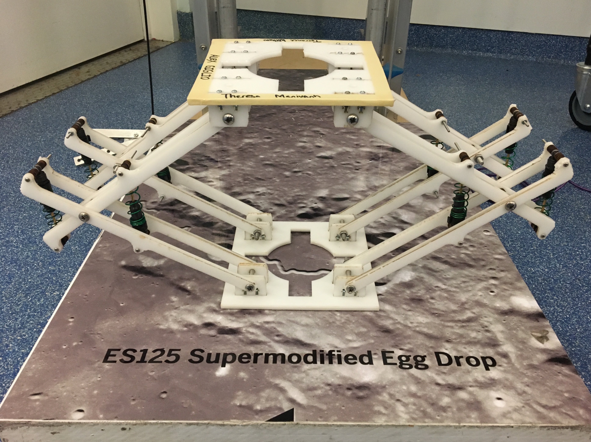

Home
ES125 Supermodified Egg Drop
I had the pleasure of taking ES125: Introduction to Mechanical Systems under Professor Boris Kozinsky, an absolutely phenomenal teacher. The final project for the course was to use our knowledge of linear dynamical systems to make a shock absorber for an egg drop competition.
The shock absorber was to rest underneath a sled that was dropped along two vertical rails. On top of the sled was a fake egg and an accelerometer. Points were awarded for not breaking the egg and for having a low maximum deceleration. We were given two 24"x12" sheets of acetal plastic, a laser cutter, and a box full of springs and dampers used for RC car shocks.
Our mechanical design had long arms so that we could spread the deceleration over a longer distance, and room for the maximum number of dampers. The long arms also allowed us to use the arms themselves as shock absorbers. I designed the entire CAD in Solidworks. The design utilized tab-and-slot t-nut assemblies, which allowed us to securely mount sheets of laser-cut acetal at right angles to each other.

I also wrote some MATLAB code based on our linearized model of the system that calculated the expected maximum deceleration of the egg based on the spring and damper constants of the shocks we could choose from. We used this to inform our choice of shocks.
Then we cut and assembled it. Our system had the lowest max deceleration in the class!
Thank you to Terrance Williams, Theresa Manivanh, and Heiko Kabutz for being awesome to work with.